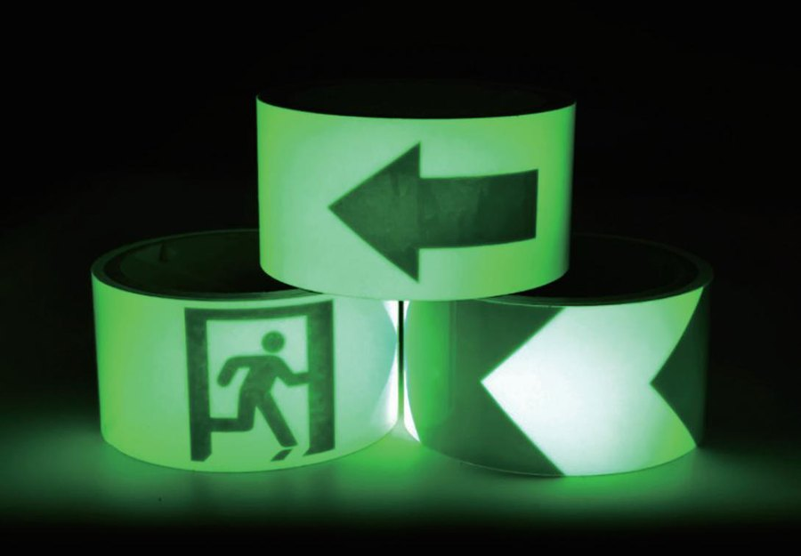

Xe nâng va vào đâu, hư ở đó.Sàn trơn ở đâu, người ngã ở đó.
Rào chắn polymer, băng dán sàn an toàn cho nhà máy, kho ở KCN miền Bắc. Khảo sát tận nơi.
- Pháp nhânCông ty TNHH XNK Khoáng Sản Thiên Khôi
- Mã số thuế0110550912
- Khu vực khảo sátHà Nội và các tỉnh phía Bắc
- Video thử nghiệm25 video của nhà sản xuất
Câu dặn "đi cẩn thận" không chặn được chiếc xe nào. Cần rào, vạch sàn và một lối đi riêng cho người.
Rào thép móp, sơn tróc
Ăn một cú xe nâng là móp. Thanh móp phải cắt ra thay, chân đế bung.
Chân kệ bị quẹt
Xe quay đầu ở cuối dãy, càng xe quẹt chân kệ. Kệ yếu đi mà nhìn khó thấy hết.
Người đi chung lối với xe
Pallet chở cao che tầm nhìn. Anh thấy xe, xe không thấy anh.
Bậc trơn, mất điện tối đen
Mũi bậc mòn bóng. Mất điện ca đêm, không ai thấy mép bậc.
Bấm vào từng khu trong nhà kho
Mỗi khu có nguy cơ riêng và cách chặn riêng. Chỗ nào chỉ cần kẻ vạch, chúng tôi nói kẻ vạch.
 Ảnh: nhà sản xuất
Ảnh: nhà sản xuấtLối đi bộ và điểm giao cắt
Pallet chở cao che gần hết tầm nhìn của tài xế. Xe nâng điện chạy êm, tới sát mới nghe. Người tưởng tài xế đã thấy mình.
Cách chặn Ảnh: nhà sản xuất
Ảnh: nhà sản xuấtĐầu dãy kệ và chân kệ
Xe nâng quay đầu ở cuối dãy. Càng xe hoặc pallet quẹt vào chân kệ. Chân kệ móp thì phải kiểm lại cả khoang kệ.
Cách chặnẢnh: nhà sản xuấtCột nhà xưởng và khung cửa
Cột đứng ngay khúc cua, tài xế ôm cua sát. Khung cửa cuốn bị càng xe quẹt mỗi lần ra vào.
Cách chặn Ảnh: nhà sản xuất
Ảnh: nhà sản xuấtCửa dock và khu xuất hàng
Giờ xuất hàng, xe ra vào liên tục. Pallet chờ xuất tràn ra lối đi, ép người bước ra đường xe.
Cách chặn Ảnh: nhà sản xuất
Ảnh: nhà sản xuấtBãi đỗ và khu sạc xe nâng
Xe lùi vào ô đỗ, đuôi xe chạm tường hoặc tủ sạc. Khu sạc có cáp và thiết bị điện.
Cách chặn Ảnh: nhà sản xuất
Ảnh: nhà sản xuấtCầu thang, dốc và sàn hay ướt
Mũi bậc mòn bóng. Bậc thép gân dính dầu. Dốc ra cửa kho ướt nước mưa.
Cách chặn Ảnh: nhà sản xuất
Ảnh: nhà sản xuấtLối thoát hiểm và chỗ thiếu sáng
Mất điện lúc ca đêm. Cầu thang, lối ra tối đen. Đèn sự cố chưa kịp sáng, hoặc không sáng.
Cách chặnMột bên chặn va chạm. Một bên chặn trơn ngã.
Tất cả sản phẩm
Xem rào, băng làm gì khi bị thử thật
Đừng thay hết rào thép bằng polymer.
Cũng đừng giữ rào thép ở những chỗ ngày nào cũng bị va. Quy tắc gọn: chỗ ít xe giữ thép, chỗ va liên tục đổi polymer.
Lối ít xe, xe nhẹ
- Lối phụ, ít xe qua lại
- Xe đẩy tay, xe nâng tay
- Chi phí ban đầu thấp hơn
Chỗ va liên tục
- Đầu dãy kệ
- Khúc cua, giao lộ trong kho
- Cửa dock, khu xuất hàng
Không gửi catalogue rồi ngồi chờ.
Chúng tôi xuống xưởng, đứng cạnh đường xe nâng, chỉ ra từng chỗ có thể va chạm.
 Ảnh: nhà sản xuất
Ảnh: nhà sản xuấtGửi ảnh vị trí
Chụp chỗ hay va hoặc hay trơn, ghi chiều dài khoảng bao nhiêu mét. Gửi qua form hoặc Zalo.
Xem và gợi ý loại
Thiên Khôi xem ảnh, gợi ý dòng rào hoặc loại băng hợp với từng chỗ.
Khảo sát tại chỗ
Đến tận nơi xem luồng xe, luồng người đúng lúc ca đang chạy, đo đạc, rồi đề xuất cho từng khu.
Làm trước chỗ gấp
Các đoạn còn lại chia theo đợt. Không cần dừng cả khu vực.
Mỗi bài một việc làm ngay
Ảnh: nhà sản xuấtRào chắn xe nâng: thép hay polymer
Đừng thay hết. Cũng đừng giữ thép ở chỗ ngày nào cũng bị va. Quy tắc chọn theo từng đoạn trong kho.

Điểm mù xe nâng: vì sao tài xế không thấy người đi bộ và chặn ở đâu
Vì sao tài xế xe nâng không thấy người đi bộ, 7 chỗ trong kho hay va chạm và thứ tự chặn từ rào, cổng tới vạch, gương, còi.

Băng dạ quang thoát hiểm: dán ở đâu để mất điện vẫn thấy lối
Băng dạ quang hút sáng, phát sáng rồi mờ dần ra sao, khác phản quang chỗ nào, dán ở 5 chỗ nào trên lối thoát hiểm và kiểm thế nào mỗi tháng.

Tự kiểm tra an toàn kho hàng trong 15 phút: 10 điểm cần nhìn
Đi lúc nào, đi đường nào, nhìn gì ở 10 điểm và khi nào phải xử lý ngay: vòng tự kiểm kho 15 phút mỗi tuần.
Giải pháp an toàn nhà xưởng bắt đầu từ một vòng đi kho
Giải pháp an toàn nhà xưởng của Thiên Khôi gồm hai nhóm: rào chắn để chặn va chạm và băng dán sàn để chặn trơn ngã, chỉ rõ luồng đi. Dùng nhóm nào, đặt ở đâu thì chọn theo chính kho của anh chị.
Va chạm và trơn ngã là hai việc khác nhau
Xe nâng quẹt chân kệ, ôm cua sát cột, lùi vào tủ sạc: đó là việc của rào chắn polymer, cột chắn và ốp chân kệ. Người trượt ở mũi bậc, không thấy mép bậc khi mất điện, đi lấn sang đường xe vì không có vạch: đó là việc của băng dán sàn.
Nhiều kho chỉ làm một nửa. Vạch kẻ rất đẹp nhưng điểm giao cắt đông người vẫn không có rào. Hoặc rào lắp dày nhưng cầu thang lên văn phòng vẫn trơn. Khi khảo sát, chúng tôi xem cả hai nhóm trong cùng một vòng đi để không sót chỗ nào.
Xếp thứ tự khi ngân sách có hạn
Không cần làm hết trong một lần. Cách xếp thứ tự đơn giản là nhìn hai điều: chỗ đó có người đứng hoặc đi qua không, và chỗ đó đã bị va bao nhiêu lần trong năm.
- Làm trước: điểm người cắt ngang đường xe, đầu dãy kệ có vết móp mới, cầu thang có mũi bậc mòn bóng
- Làm đợt sau: đoạn rào thép đã móp nhưng ít người qua, cột ở khu ít xe
- Theo dõi thêm: lối phụ chỉ có xe đẩy tay, kẻ vạch trong lúc chờ là đủ
Một buổi khảo sát tại chỗ xem những gì
Người khảo sát đứng ở các điểm giao cắt đúng lúc ca đang chạy. Họ xem xe nâng ôm cua ra sao, pallet chờ xuất nằm ở đâu, người hay đi tắt qua chỗ nào. Ngoài ra còn những thứ ảnh không cho thấy:
- Loại xe chạy qua từng khu: xe đẩy, xe nâng tay, xe nâng điện, xe nâng dầu
- Vết va cũ trên chân kệ, cột, khung cửa, tường sau ô đỗ
- Nền sàn: bê tông trần hay epoxy, có nứt, có khe co giãn, chỗ nào hay ướt hoặc dính dầu
- Chiều dài từng đoạn cần rào hoặc cần dán băng, đo bằng thước
- Chỗ thiếu sáng và đường ra cửa thoát hiểm khi mất điện
Những việc rào và băng không làm thay được
Rào chắn giảm hậu quả khi xe va, nhưng không thay việc đào tạo tài xế, giới hạn tốc độ và còi khi lùi. Ốp chân kệ nhận cú quẹt thay cho chân trụ. Kệ thì vẫn phải được kiểm theo lịch của nhà máy. Băng dạ quang giúp người thấy mép bậc khi đèn tắt, còn đèn sự cố và biển thoát hiểm vẫn phải có đủ. Doanh nghiệp nên đối chiếu quy định hiện hành về an toàn lao động cho từng hạng mục.
Bắt đầu từ đâu
Nếu chưa có ảnh, dùng checklist tự kiểm 10 điểm để đi một vòng kho trong ca, hoặc đọc 7 khu hay xảy ra va chạm để biết cần nhìn gì. Phân vân giữa thép và polymer thì đọc bài thép hay polymer. Đã có ảnh thì gửi qua trang đặt khảo sát.
| Khu trong kho | Nguy cơ chính | Nhóm nên xem trước |
|---|---|---|
| Lối đi bộ, điểm giao cắt | Người và xe đi chung | Rào lối đi bộ, cổng tự đóng, băng kẻ vạch |
| Đầu dãy kệ | Càng xe quẹt chân kệ | Ốp chân kệ, rào xe nâng 2 thanh |
| Cột, khung cửa | Xe ôm cua sát | Bảo vệ cột, bảo vệ khung cửa, băng phản quang |
| Cửa dock | Pallet lấn lối, xe ra vào dày | Chắn khu bốc dỡ, cột chắn, vạch khoanh vùng |
| Cầu thang, dốc | Trơn, mũi bậc mòn | Băng chống trơn |
| Lối thoát hiểm | Tối khi mất điện | Băng dạ quang |
Thiên Khôi làm gì và phục vụ khu vực nào?
Thiên Khôi khảo sát và đề xuất giải pháp an toàn nhà xưởng cho nhà máy, kho ở Hà Nội và các tỉnh phía Bắc. Có hai nhóm: rào chắn polymer cho lối xe nâng, chân kệ, cột, bãi xe, và băng dán sàn để kẻ vạch, chống trơn, phản quang, dạ quang. Chúng tôi xuống xưởng xem rồi mới đề xuất cho từng khu.
Có phải nhà xưởng nào cũng cần rào polymer không?
Không. Lối phụ chỉ có xe đẩy tay, ít người qua thì giữ rào thép đang có hoặc chỉ kẻ vạch là đủ. Rào polymer đáng đổi ở chỗ bị va liên tục như đầu dãy kệ, khúc cua, cửa dock. Bài rào chắn xe nâng thép hay polymer nói cách chọn theo từng đoạn trong kho.
Cần gửi gì để được tư vấn?
Gửi ảnh chỗ hay va hoặc hay trơn, kèm chiều dài ước lượng tính bằng mét và loại xe chạy qua. Một ảnh xa thấy cả khu và một ảnh gần thấy vết va là đủ để chúng tôi gợi ý ban đầu. Gửi qua trang đặt khảo sát hoặc nhắn Zalo cho Thiên Khôi.
Khảo sát tại chỗ gồm những bước nào?
Người khảo sát đi theo luồng hàng đúng giờ ca đang chạy: cửa nhập, khu kệ, dock xuất, cầu thang, lối thoát hiểm. Ở mỗi khu, chúng tôi đo đoạn cần xử lý, xem nền sàn, ghi loại xe và chụp ảnh. Sau đó anh chị nhận đề xuất cho từng khu, chỗ nào làm trước, chỗ nào để đợt sau.
Có làm theo đợt, làm chỗ gấp trước được không?
Được, giải pháp an toàn nhà xưởng không cần làm xong trong một lần. Thường làm trước điểm người cắt ngang đường xe, đầu dãy kệ đã có vết móp và cầu thang trơn. Các đoạn còn lại chia đợt theo ngân sách và lịch sản xuất. Lắp theo từng đoạn nên không phải dừng cả khu. Xem 7 khu hay xảy ra va chạm để tự xếp thứ tự.
Băng dán sàn có thay được rào chắn không?
Không. Vạch trên sàn chỉ nhắc người và tài xế đi đúng luồng, không giữ được chiếc xe nào khi tài xế mất tập trung. Ở đoạn người đi sát đường xe nâng, cần rào cứng. Vạch hợp với lối phụ, khoanh vùng pallet và chia khu. Xem ba mức tách người khỏi xe nâng.

Ba bước để kho của anh chị có đề xuất theo từng khu
Bắt đầu từ vài tấm ảnh chụp bằng điện thoại. Chúng tôi xem ảnh, gọi lại, rồi hẹn xuống kho đúng giờ ca đang chạy.
- 1Gửi ảnh vị trí
Chụp chỗ hay va hoặc hay trơn, ghi chiều dài ước lượng và loại xe chạy qua.
- 2Nhận gợi ý ban đầu
Thiên Khôi xem ảnh, gọi lại và gợi ý nhóm rào hoặc loại băng cho từng chỗ.
- 3Khảo sát tại chỗ
Hẹn đúng giờ ca đang chạy để đo, xem nền sàn, rồi gửi đề xuất cho từng khu.
Đã nhận yêu cầu
Bản mẫu: form này chưa gửi đi đâu. Trên web thật, Thiên Khôi gọi lại theo số anh chị để lại.